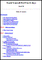

Книги по Perl
создания сетевых приложений, с использованием языка Perl.
Формат файла: Файл PDF
Язык: Английский
Язык: Английский

238k

Формат файла: Файл PDF
Язык: Английский
Язык: Английский
1.72M
Книги >>> Книги по Perl
Книги по Perl |
||
| Network Programming with Perl | ||
|
В этой книге подробным образом описана технология создания сетевых приложений, с использованием языка Perl.
Формат файла: Файл PDF
Язык: Английский |
238k |
|
| Teach Yourself Perl 5 in 21 days | ||
|
 |
Книга "Изучить Perl 5 за 21 день" хорошее руководство для программиста, начинающего работать с Perl.
Формат файла: Файл PDF
Язык: Английский |
1.72M |